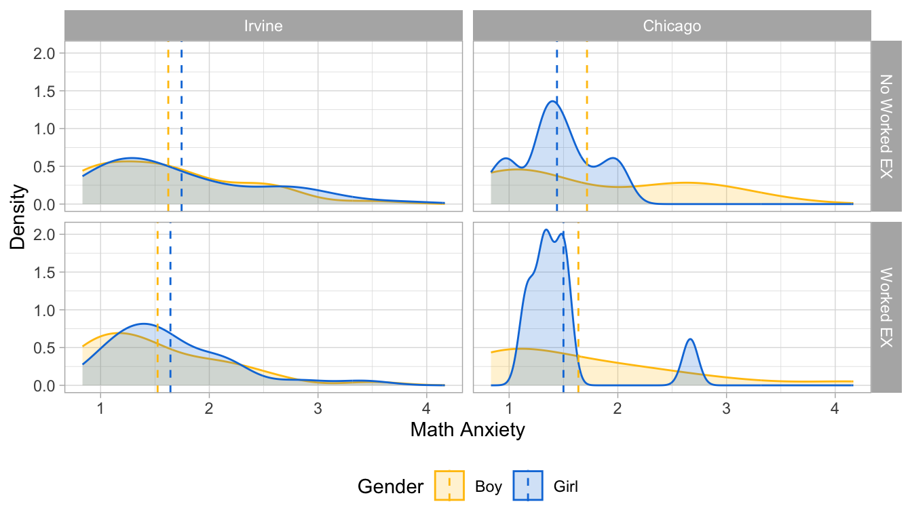
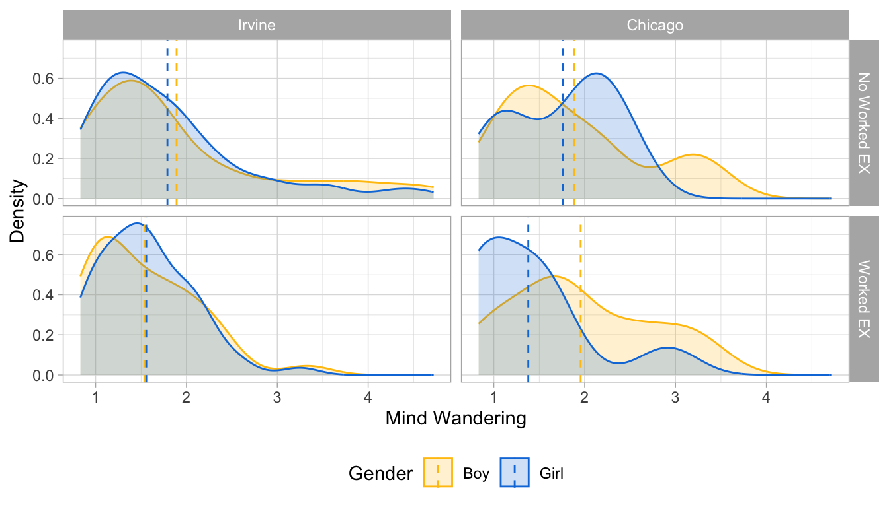
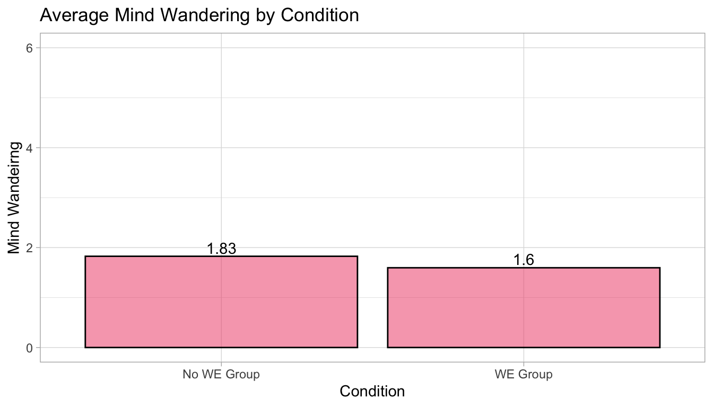
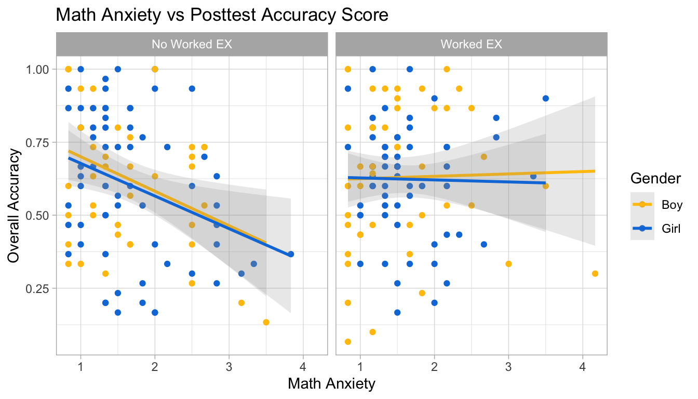
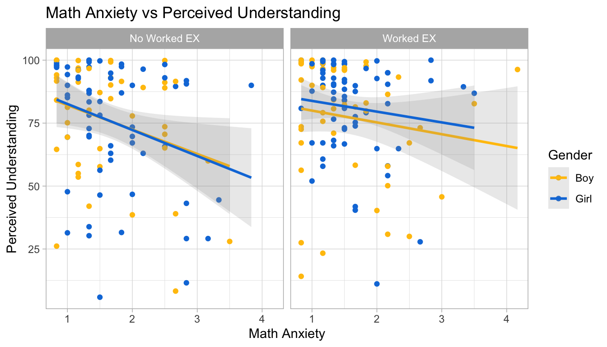
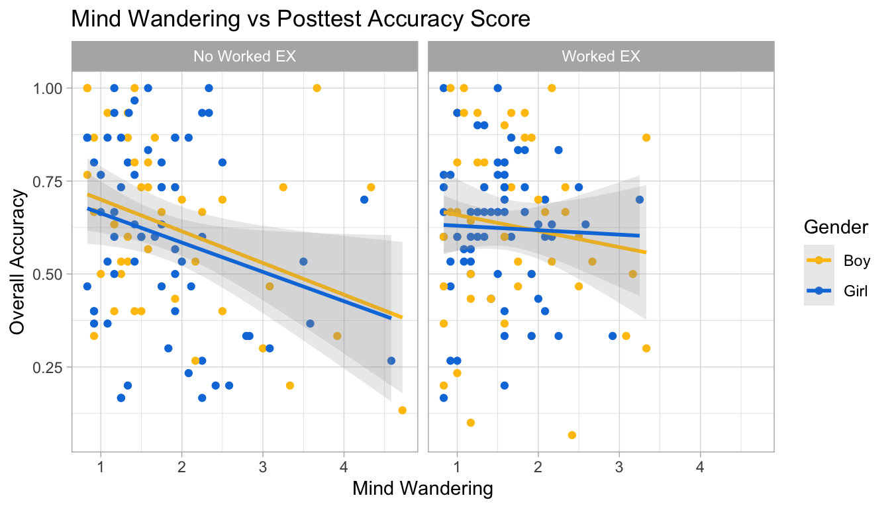
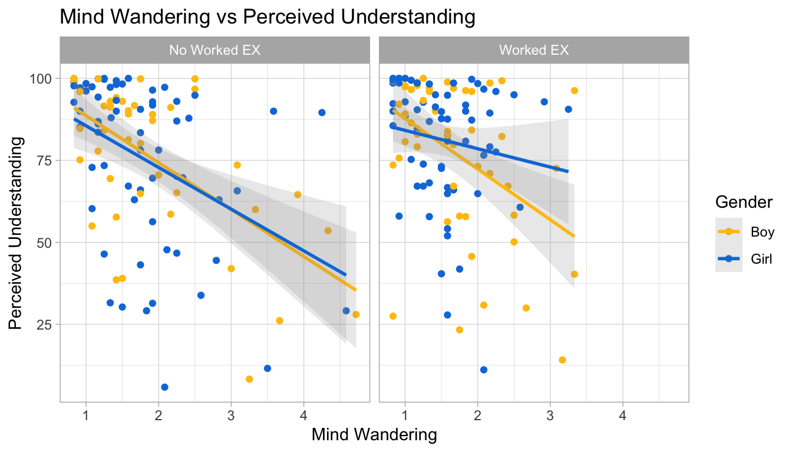

# A tibble: 6 × 409
drop dropwhy incomplete_pt1 incomplete_pt2 `did not do_pt2`
<dbl> <chr> <dbl> <dbl> <dbl>
1 NA <NA> NA 1 NA
2 NA <NA> NA NA NA
3 1 duplicate pt 1 NA NA NA
4 NA <NA> NA NA NA
5 NA <NA> NA NA NA
6 NA <NA> NA NA NA
# ℹ 404 more variables: `Scratch paper_pt1` <dbl>, `Scratch paper_pt2` <dbl>,
# `Subject ID #...8` <chr>, `Subject ID #...9` <chr>, Notes <chr>,
# StartDate...11 <dttm>, EndDate...12 <dttm>, Progress...13 <dbl>,
# Condition <chr>, `UPDATED_Opt-in-out` <dbl>, Opt_Out <chr>,
# `Duration (in seconds)...17` <dbl>, Finished...18 <dbl>,
# RecordedDate...19 <dttm>, Browser_info_Browser...20 <chr>,
# Browser_info_Version...21 <chr>, …
Warning: Using an external vector in selections was deprecated in tidyselect 1.1.0.
ℹ Please use `all_of()` or `any_of()` instead.
# Was:
data %>% select(tma_lst)
# Now:
data %>% select(all_of(tma_lst))
See <https://tidyselect.r-lib.org/reference/faq-external-vector.html>.
# Get rid of row that has NA values in Condition and/or Sexdf2 <- df2 %>%filter(Condition ==1| Condition ==2)df2 <- df2 %>%filter(!is.na(Sex))df2$Condition[df2$Condition ==2] <-0# Assign 0 for "boy" and 1 for "girl"df2$Sex[df2$Sex ==1] <-0df2$Sex[df2$Sex ==2] <-1# Make sure variable is categoricaldf2$chicago <-as.numeric(df2$chicago)df2$Sex <-as.numeric(df2$Sex)df2$nonwhite <-as.numeric(df2$nonwhite)df2$Condition <-as.numeric(df2$Condition)
The clean, imputed data provided contains _sum variable only for both TMA, MW, and SI. We want avaerage values for both math anxiety, mind wandering, and situational interest.
Trait math anxiety: 6 questions
Mind wandering: 12 questions
Situational interest: 14 questions
df_clean <- df_clean %>%mutate(# average trait math anxietyTMA_avg = tma_sum_rv /6,# average mind wanderingMW_avg = ( mw_day1_sum + mw_day2_sum ) /12,# average situational interestSI_avg = si_sum /14)
We also need to add students’ accuracy scores to this dataset:
colnames(df2)[1] <-"subjectid"df3 <- df2 %>%select(1,19,2)df_clean2 <-left_join(df_clean, df3, by ="subjectid") %>%filter(!is.na(Del_OverallAcc))
# TMA mean by site, condition, and gendermu <- df_clean2n %>%group_by(chicago, Condition,gender) %>%summarize(mean =mean(TMA_avg))
`summarise()` has grouped output by 'chicago', 'Condition'. You can override
using the `.groups` argument.
# math anxiety density plotdf_clean2n %>%ggplot(aes(x = TMA_avg, fill =as.factor(gender),color =as.factor(gender))) +geom_density(alpha =0.2) +theme_light() +geom_vline(data=mu, aes(xintercept=mean, color=as.factor (gender)),linetype="dashed") +facet_grid(rows =vars(Condition),cols =vars(chicago),labeller =labeller(Condition = cond,chicago = location)) +scale_fill_manual(values =c("#FFC20A", "#0C7BDC"), labels =c("Boy", "Girl")) +scale_color_manual(values =c("#FFC20A", "#0C7BDC"), labels =c("Boy", "Girl")) +labs(x ="Math Anxiety", y ="Density",fill ="Gender", color ="Gender") +theme(legend.position="bottom")

Overall, all students seemed to have a low average math anxiety (1 ~ 2). In Irvine, girls seemed to have higher math average than boys in both condition. However, in Chicago, boys seemed to have higher average than girls.
Girls seemed to have a higher math anxiety compared to boys overall. Check if the difference is significant in each site by using ANOVA test:
No significant difference between gender on math anxiety was found by gender.
1.3.2 Mind Wandering
# TMA mean by site, condition, and gendermu <- df_clean2n %>%group_by(chicago, Condition,gender) %>%summarize(mean =mean(MW_avg))
`summarise()` has grouped output by 'chicago', 'Condition'. You can override
using the `.groups` argument.
# math anxiety density plotdf_clean2n %>%ggplot(aes(x = MW_avg, fill =as.factor(gender),color =as.factor(gender))) +geom_density(alpha =0.2) +theme_light() +geom_vline(data=mu, aes(xintercept=mean, color=as.factor (gender)),linetype="dashed") +facet_grid(rows =vars(Condition),cols =vars(chicago),labeller =labeller(Condition = cond,chicago = location)) +scale_fill_manual(values =c("#FFC20A", "#0C7BDC"), labels =c("Boy", "Girl")) +scale_color_manual(values =c("#FFC20A", "#0C7BDC"), labels =c("Boy", "Girl")) +labs(x ="Mind Wandering", y ="Density",fill ="Gender", color ="Gender") +theme(legend.position="bottom")

In Irvine, both girls and boys seemed to have similar low average mind wandering (1~2); worked example group showing somewhat higher mind wandering average than the worked example students in Irvine. On the other hand, in Chicago, boys had higher mind wandering than boys in both groups.
Check if the difference is significant in each site by using ANOVA test:
The results show that mind wandering was different between worked example and no worked example group, regardless of the cite location or gender. No gender difference was found in mind wandering.
# plot the overall mind wandering average but by the conditiondf_clean2n %>%group_by(Condition) %>%summarize(mean =mean(MW_avg)) %>%ggplot(aes(x =as.factor(Condition), y = mean)) +geom_bar(position ="dodge", stat ="identity", color ="black", fill ="#ef476f", alpha =0.5) +geom_text(aes(label=round(mean,2)), position=position_dodge(width=0.9), vjust=-0.25) +ylim(0,6) +labs(title ="Average Mind Wandering by Condition",x ="Condition", y ="Mind Wandeirng") +scale_x_discrete(labels=c("No WE Group", "WE Group")) +theme_light()

WE group had a lower average mind wandering than no WE group.
1.3.2.1 Data Visualization
TMA vs Accuarcay Scores
tma_acc_plt <- df_clean2n %>%ggplot(aes(x = TMA_avg, y = Del_OverallAcc, color =as.factor(gender))) +geom_point() +geom_smooth(method ="lm", alpha =0.2) +scale_color_manual(values =c("#FFC20A", "#0C7BDC"), labels =c("Boy", "Girl")) +facet_grid(~Condition, labeller =labeller(Condition = cond,chicago = location)) +theme_light() +labs(title ="Math Anxiety vs Posttest Accuracy Score", x ="Math Anxiety", y ="Overall Accuracy", color ="Gender") ggsave(tma_acc_plt, file ="../../../outputs/tma_acc_plt2.png",width =8, height =4)
`geom_smooth()` using formula = 'y ~ x'
tma_acc_plt
`geom_smooth()` using formula = 'y ~ x'

TMA vs Perceived Understanding
tma_und_plt <- df_clean2n %>%ggplot(aes(x = TMA_avg, y = understand_avg, color =as.factor(gender))) +geom_point() +geom_smooth(method ="lm", alpha =0.2) +scale_color_manual(values =c("#FFC20A", "#0C7BDC"), labels =c("Boy", "Girl")) +facet_grid(~Condition, labeller =labeller(Condition = cond,chicago = location)) +theme_light() +labs(title ="Math Anxiety vs Perceived Understanding", x ="Math Anxiety", y ="Perceived Understanding", color ="Gender") ggsave(tma_und_plt, file ="../../../outputs/tma_und_plt2.png",width =8, height =4)
`geom_smooth()` using formula = 'y ~ x'
tma_und_plt
`geom_smooth()` using formula = 'y ~ x'

MW vs Posttest Accuracy
mw_acc_plt <- df_clean2n %>%ggplot(aes(x = MW_avg, y = Del_OverallAcc, color =as.factor(gender))) +geom_point() +geom_smooth(method ="lm", alpha =0.2) +scale_color_manual(values =c("#FFC20A", "#0C7BDC"), labels =c("Boy", "Girl")) +facet_grid(~Condition, labeller =labeller(Condition = cond,chicago = location)) +theme_light() +labs(title ="Mind Wandering vs Posttest Accuracy Score", x ="Mind Wandering", y ="Overall Accuracy", color ="Gender") ggsave(mw_acc_plt, file ="../../../outputs/mw_acc_plt2.png",width =8, height =4)
`geom_smooth()` using formula = 'y ~ x'
mw_acc_plt
`geom_smooth()` using formula = 'y ~ x'

MW vs Perceived Understanding
mw_und_plt <- df_clean2n %>%ggplot(aes(x = MW_avg, y = understand_avg, color =as.factor(gender))) +geom_point() +geom_smooth(method ="lm", alpha =0.2) +scale_color_manual(values =c("#FFC20A", "#0C7BDC"), labels =c("Boy", "Girl")) +facet_grid(~Condition, labeller =labeller(Condition = cond,chicago = location)) +theme_light() +labs(title ="Mind Wandering vs Perceived Understanding", x ="Mind Wandering", y ="Perceived Understanding", color ="Gender") ggsave(mw_und_plt, file ="../../../outputs/mw_und_plt2.png",width =8, height =4)
`geom_smooth()` using formula = 'y ~ x'
mw_und_plt
`geom_smooth()` using formula = 'y ~ x'

TMA vs MW
tma_mw_plt <- df_clean2 %>%ggplot(aes(x = TMA_avg, y = MW_avg, color =as.factor(gender))) +geom_point() +geom_smooth(method ="lm", alpha =0.2) +scale_color_manual(values =c("#FFC20A", "#0C7BDC"), labels =c("Boy", "Girl")) +facet_grid(~Condition, labeller =labeller(Condition = cond,chicago = location)) +theme_light() +labs(title ="Math Anxiety vs Mind Wandering", x ="Math Anxiety", y ="Mind Wandering", color ="Gender")ggsave(tma_mw_plt, file ="../../../outputs/tma_mw_plt2.png",width =8, height =4)
Some paths in the model are different among groups -> Looking closely at the differences in the effect of math anxiety on mind wandering between groups